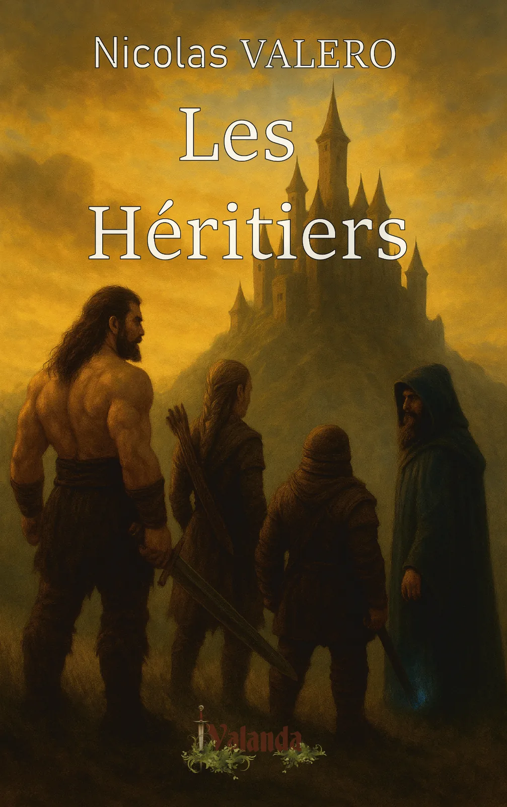
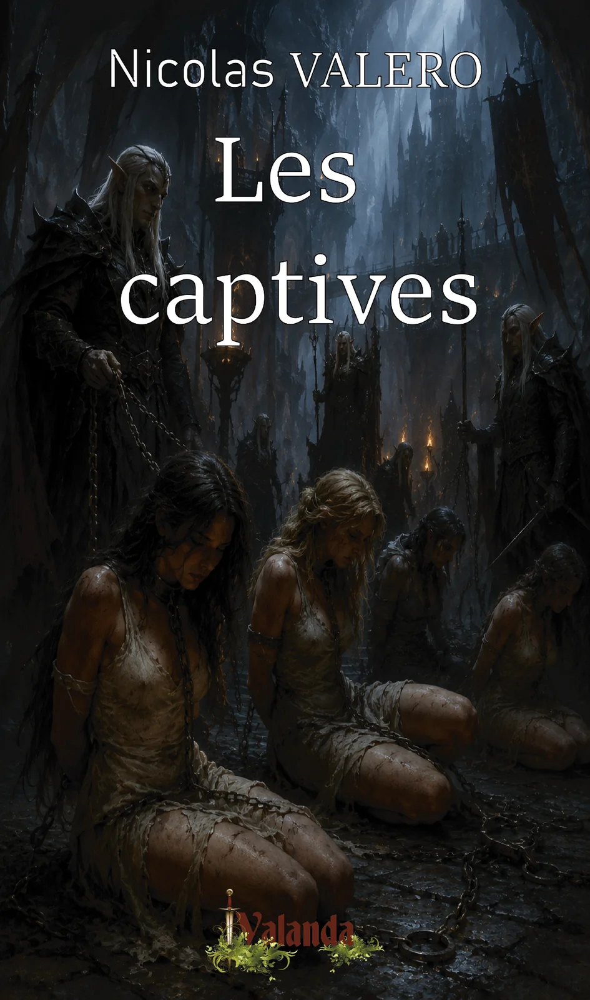

Une saga née de l’univers de Valanda.

Disponible.
Dracknor, barbare indompté, Malaë, pisteur elfe, Thoreg Forge-Roc, guerrier nain, et Seyren, sorcier au regard troublant… Tous sont les enfants d’anciens héros qui jadis sauvèrent le royaume de Loskanie.
Convoqués par le Premier Conseiller du roi, ils découvrent qu’une menace sourde ronge Valanda. Des villages sont réduits au silence, des ombres oubliées se réveillent, et le Kana, essence du monde, s’agite comme avant les grands cataclysmes.
Pour percer les secrets du passé et protéger l’avenir, ils devront affronter des dangers que leurs parents eux-mêmes redoutaient. Entre trahisons, complots et batailles, leur amitié sera leur plus grande arme… ou leur plus lourde faiblesse.

La suite du roman Les Héritiers.
Sortie prévue : 1er trimestre 2027.
Le récit plonge ses racines dans un univers déjà vivant.
Le roman est une première façon d’entrer dans l’univers.
L’objectif : donner envie de continuer à explorer.